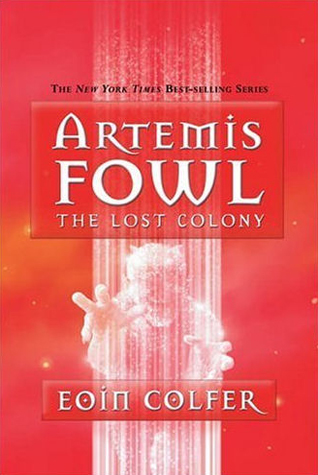

The Lost Colony
⭐️⭐️⭐️⭐️
This installment was a bit geekier than the other books as it delved into another dimension, literally. Reading this book is proving to be pivotal to the following book... so don't start with The Time Paradox. A quick read, and probably more enjoyable than Artemis Fowl 3 and 4.
- Previously: Term Limits
- Next: The Time Paradox